Published by IOP Publishing for the AAS. This paper appeared in The Astrophysical Journal, published by IOP Publishing on behalf of the American Astronomical Society. That published article is the version of record, and it is the one to cite:
McCoy, J. A., McEntaffer, R. L. & Miles, D. M. (2020) Extreme ultraviolet and soft X-ray diffraction efficiency of a blazed reflection grating fabricated by thermally activated selective topography equilibration. The Astrophysical Journal 891, 114. IOP Publishing / AAS. doi:10.3847/1538-4357/ab76d3
What this page is. The authors' own manuscript,
rendered from the LaTeX source submitted to arXiv. It is not IOP
Publishing's typeset version and carries none of the publisher's styling;
AAS's aastex63.cls and aasjournal.bst are not
reproduced here. Preprint:
arXiv:2003.06449
(PDF),
doi:10.48550/arXiv.2003.06449
A 2022 erratum corrects the published article. It is open access under CC BY 4.0, and is quoted and applied here on that basis:
McCoy, J. A., McEntaffer, R. L. & Miles, D. M. (2022) Erratum: “Extreme Ultraviolet and Soft X-Ray Diffraction Efficiency of a Blazed Reflection Grating Fabricated by Thermally Activated Selective Topography Equilibration” (2020 ApJ, 891, 114). The Astrophysical Journal 926, 105. © 2022 The Author(s), published by the American Astronomical Society. doi:10.3847/1538-4357/ac4b63
It lists four corrections. This page is built from the authors' manuscript rather than from the published article, and only two of the four describe anything wrong with the manuscript. Each was checked against the source:
- Applied. The equation for the roll angle $\phi$ is given here in the erratum's corrected form, $\phi = \arcsin(\Delta x_0 / r) - \alpha$. The manuscript has the small-angle form, $\sin(\phi) = \Delta x_0/r - \sin(\alpha)$, which the erratum notes holds approximately for small $\phi$ and does not affect the reported results. The value in Table 1 was derived with the corrected form.
- Applied. A sentence in Section 2.3 is given in the erratum's revised wording. The manuscript attributed a thicker coating to the difference in surface composition; the erratum attributes it instead to the EBPVD process producing a nonconformal coating dependent on the chamber geometry. Marked in the text.
- Does not apply. The erratum fixes a missing space between “for” and “$n$” in the grating equation. The manuscript's source is already correctly spaced, so the fault belongs to the published typesetting rather than to the paper.
- Does not apply. The erratum notes that $\phi$ and the yaw angle $\varphi$ are swapped throughout the online edition, and says the PDF prints them correctly. The manuscript's source distinguishes them correctly, and so does this page.
One thing the erratum does not mention: its corrected grating equation reads “for $n = \pm 1, \pm 2, \pm 3 \ldots$”, dropping the $n = 0$ case the manuscript includes. The manuscript's form is kept here.
1. Introduction
Instrumentation currently under development for spectroscopy at extreme ultraviolet (EUV) and soft x-ray (SXR) wavelengths ($\lambda \approx 40$ – 0.5 nm) calls for blazed reflection gratings with sawtooth-shaped grooves and custom groove layouts to achieve both high spectral sensitivity and high spectral resolving power, $\lambda / \Delta \lambda$, in a grazing-incidence telescope. With a main scientific objective of measuring the diffuse, highly-ionized baryonic content in galactic halos and the intergalactic medium through SXR absorption spectroscopy of active galactic nuclei, the Lynx X-ray Observatory is one of four flagship mission concepts considered for the 2020 Astrophysics Decadal Survey (Gaskin et al. 2019). In a similar manner to the Reflection Grating Spectrometer (RGS) on board XMM-Newton (den Herder et al. 2001), an x-ray reflection grating spectrometer suitable for Lynx requires several thousand identical blazed gratings with fanned groove layouts stacked and aligned into modular arrays to intercept SXR radiation coming to a focus in a Wolter-I telescope (McEntaffer 2019). On the other hand, the Extreme-Ultraviolet Stellar Characterization for Atmospheric Physics and Evolution (ESCAPE) mission concept incorporates two blazed gratings with curved groove layouts that play a similar role for EUV radiation in a Hettrick-Bowyer-I telescope with the goal of characterizing high-energy radiation in habitable zones surrounding M-dwarfs and their impact on the atmospheres of exoplanets (France et al. 2019).
A main challenge from the standpoint of grating fabrication in any case is the realization of a lithographic process that can generate non-parallel groove layouts with high fidelity while also maintaining blazed grooves that enable high diffraction efficiency. In particular, sensitivity requirements for Lynx require that the sum of all propagating orders exceeds 40% diffraction efficiency across the SXR bandpass while ESCAPE baselines single-order diffraction efficiency of $\sim$60% in the EUV (McEntaffer 2019; France et al. 2019).
The state-of-the-art for blazed gratings that perform with high diffraction efficiency at EUV and SXR wavelengths are those fabricated by wet anisotropic etching in mono-crystalline silicon, where typically either interference lithography (Franke et al. 1997; Chang 2003) or electron-beam lithography (Voronov et al. 2011; Miles et al. 2018) is used to define a groove layout in resist before the pattern is transferred into the underlying silicon crystal structure to produce atomically-smooth sawtooth facets. However, interference lithography faces severe limitations in its ability to pattern non-parallel layouts and even with the direct-write capabilities of electron-beam lithography, the cubic structure of mono-crystalline silicon prevents the formation of fanned or curved grooves with smooth and continuous triangular facets. Additionally, these anisotropic etching processes demand precise alignment between the groove layout in resist and the crystallographic planes of silicon to produce a high-fidelity grating. An alternative to these methods of grating manufacture is thermally activated selective topography equilibration (TASTE), which combines grayscale electron-beam lithography (GEBL) and polymer thermal reflow to produce smooth, 3D surface relief profiles in poly(methyl methacrylate) (PMMA) or other thermoplastic resists such as ZEP520A and mr-PosEBR (Schleunitz et al. 2014; Kirchner et al. 2016; Pfirrmann et al. 2016). Through optimization of TASTE, repeating staircase patterns in PMMA fabricated by GEBL can be equilibrated into wedgelike structures by selective thermal reflow to provide a template for a blazed grating with groove spacing on the order of hundreds of nanometers (McCoy et al. 2018). With no dependence on the crystallographic structure of the substrate, TASTE has the potential for realizing reflection gratings that feature both a blazed surface topography and a non-parallel groove layout, thereby enabling high sensitivity and high $\lambda / \Delta \lambda$ in an EUV/SXR spectrometer.
This paper presents diffraction efficiency measurements of a grating prototype fabricated using TASTE that emulates a blazed grating with a uniform groove spacing of 400 nm and a blaze angle of $\sim$27$^{\circ}$. Gathered at beamline 6.3.2 for EUV and SXR reflectometry of the Advanced Light Source (ALS) synchrotron facility at Lawrence Berkeley National Laboratoryhttp://cxro.lbl.gov/als632/ (Underwood et al. 1996; Gullikson et al. 2001), these measurements characterize the efficiency response of the grating in an extreme off-plane mount at a graze angle of $\sim$1.5$^{\circ}$ to enable total external reflection at SXR wavelengths. These results serve as the first demonstration of TASTE being used for EUV/SXR grating technology and provide a baseline for further experimentation with gratings that feature non-parallel grooves. Both the beamline test campaign and the grating prototype fabrication procedure are described in Section 2, with all processing for grating fabrication and materials characterization carried out at the Pennsylvania State University (PSU) Materials Research Institute.https://www.mri.psu.edu The beamline measurements are presented in Section 3 and discussed in Section 4 before conclusions and a summary are provided in Section 5.
2. Experiment and Grating Fabrication
This section introduces the beamline test procedure used to measure EUV and SXR diffraction efficiency and details how the grating prototype was fabricated. Based on the geometrical considerations for this test campaign outlined in Section 2.1, the grating grooves were patterned in PMMA on a silicon wafer using the TASTE procedure described in Section 2.2 and then coated with gold for EUV and SXR reflectivity as discussed in Section 2.3.
2.1. Diffraction Efficiency Testing at the Advanced Light Source (ALS)
Beamline 6.3.2 of the ALS provides a station for EUV and SXR reflectometry where a highly coherent, tunable beam of monochromatic radiation with wavelength 40 nm $\gtrapprox \lambda \gtrapprox$ 1 nm under high vacuum is incident onto a stage-mounted optic while a photodiode detector is used to measure the intensity of outgoing radiation. Using this laboratory facility, absolute diffraction efficiency of a grating as a function of $\lambda$, defined as the intensity ratio between the $n^{\text{th}}$ diffracted order and the unobstructed beam
can be determined experimentally following the test procedures outlined by Miles et al. (2018), where the photodiode detector mounted on vertical goniometric and horizontal linear staging at a distance $L \approx 235$ mm away from the point of incidence on the grating is used to measure $\mathcal{I}_n \! \left( \lambda \right)$ for each propagating order and $\mathcal{I}_{\text{inc}} \! \left( \lambda \right)$. The grating prototype described in this paper was designed specifically for taking diffraction efficiency measurements at this beamline in a grazing-incidence, extreme off-plane mount where the incident radiation is nearly parallel to the groove direction and propagating orders are confined to the surface of a cone with a small opening angle (Cash 1991). The locations of orders for radiation of wavelength $\lambda$ diffracting from a grating with a groove spacing $d$ are described by the generalized grating equation (Neviere et al. 1978)
where, as illustrated in the left panel of Figure 1, $\gamma$ is the half-opening angle of the cone, $\alpha$ is the azimuthal incidence angle and $\beta$ is the azimuthal diffracted angle of the $n^{\text{th}}$ diffracted order.
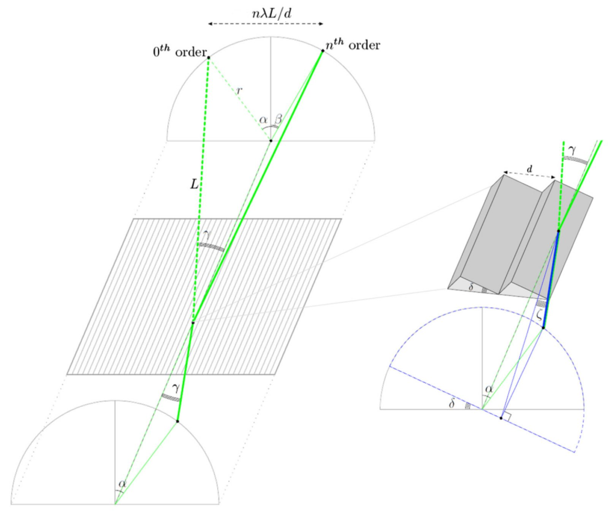
The testing methodology adopted from Miles et al. (2018) relies on the radius of the diffracted arc, given by
being smaller than the 10 mm by 10 mm collecting area of the photodiode detector used at the beamline. With propagating orders being dispersed a distance from $0^{\text{th}}$ order along the cross-groove direction given by
as shown in in Figure 1, which is in this case on the order of millimeters, a vertical, 0.5 mm-wide slit masking the detector is installed to enable the intensity of each diffracted order, $\mathcal{I}_n \! \left( \lambda \right)$, to be measured in isolation as the diffracted arc is scanned along the direction of the horizontal linear staging. Moreover, $\mathcal{I}_{\text{inc}} \! \left( \lambda \right)$ is measured in a similar fashion when the grating is moved out of the path of the beam using controllable staging. In this way, diffraction efficiency according to Equation 1 can be measured at EUV and SXR wavelengths by repeating this process for many values of $\lambda$ using the tunable beam provided by the ALS.
As described in Section 2.2, the groove spacing of the grating prototype was designed to be $d=400$ nm while the angle of the sawtooth facets achieved by TASTE in 130 nm-thick PMMA yields a blaze angle of $\delta \sim 27^{\circ}$. To enable an effective blaze response from the grating so that $\mathcal{E}_n \! \left( \lambda \right)$ is concentrated in a particular part of the spectrum, $\alpha$ and $\gamma$ should be set such that only the shallow side of the asymmetric, sawtooth-shaped grooves is illuminated (Loewen & Popov 1997). Radiation is incident on these sawtooth facets at an angle $\zeta$ as illustrated in the right panel of Figure 1, which must be smaller than the critical angle for total external reflection (Attwood & Sakdinawat 2017) and is related to $\alpha$ and $\gamma$ through the following relation:
The result in principle is that radiation is preferentially diffracted to an angle $\beta = 2 \delta - \alpha$ so that the blaze wavelength for the $n^{\text{th}}$ propagating order is
At the beamline, $\alpha$ and $\gamma$ are controlled through the movement of stage rotations along principal axes relative to the surface of the grating substrate. Referencing the Cartesian coordinate system drawn in Figure 2, the stage-controllable angles are rotations about the $x$ and $y$ axes.
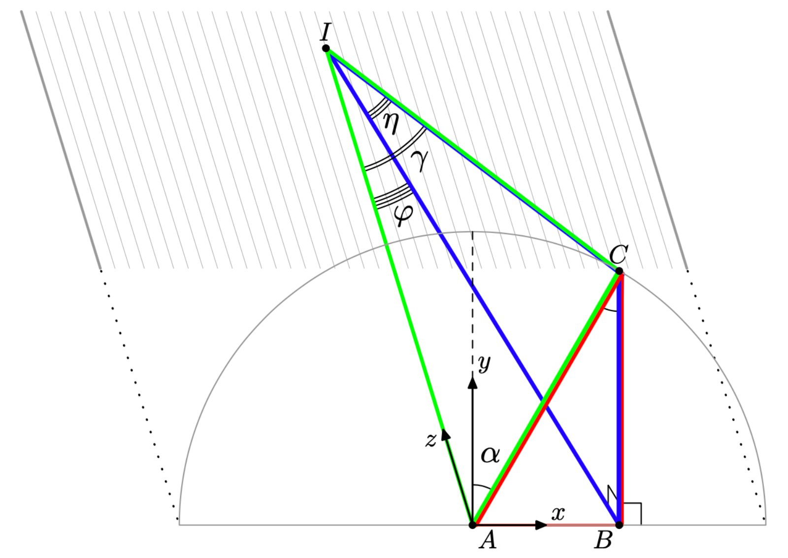
Rotations about the $x$ axis at the point of incidence are tied to the graze angle relative to the surface of the grating, $\eta$, defined by the relation
whereas rotations about the $y$ axis represent grating yaw, $\varphi$, which is related to $\alpha$ and $\eta$ by
where $\varphi = 90^{\circ}$ corresponds to an exact in-plane mount with $\sin \left( \gamma \right) = 1$. Additionally, the orientation of the grating relative to the $z$ axis is characterized by the roll angle, $\phi$, which serves to rotate order locations about the center of the diffracted arc. This angle, not shown in Figure 2, remains fixed nominally at $\phi = 0^{\circ}$ but like $\eta$ and $\varphi$, it must be constrained to measure $\alpha$ and $\gamma$ accurately; this is addressed in Section 3.
To satisfy the blaze condition for the grating prototype and the testing methodology requirement that $\gamma \lessapprox 2^{\circ}$ comfortably, the grating prototype was designed for use at a nominal graze angle of $\eta = 1.5^{\circ}$ in a Littrow configuration, where $\alpha = \beta = \delta \approx 27^{\circ}$ and $\zeta = \gamma \approx 1.7^{\circ}$ by equationsEquation 5 andEquation 7. In this configuration, diffraction efficiency is expected to be maximized and Equation 6 for the blaze wavelength becomes
Meanwhile, Equation 8 yields $\varphi \approx 0.8^{\circ}$ so that for $\phi \approx 0^{\circ}$, the grating dispersion direction is virtually parallel to the direction of the horizontal linear stage motion. Because the incident beam is then nearly parallel with both the groove direction and the surface of the grating substrate, the grooves of the grating prototype must be long enough to encompass the incident beam in projection at the chosen grazing-incidence angle of $\eta = 1.5^{\circ}$. With knowledge that the cross-sectional size of the beam at the ALS is $\lessapprox 0.5$ mm as it is incident on an optic, the grating prototype was designed to be 50 mm along the groove direction and 7.5 mm along the dispersion direction as to allow the beam to be positioned on the grooved area with relative ease. Considering the EUV/SXR wavelengths at which there exist propagating orders in this geometry and the separation of these orders defined by Equation 4 with $d=400$ nm and $L \approx 235$ mm relative to the 0.5 mm slit width, diffraction efficiency testing at the ALS was restricted to 15.5 nm $> \lambda >$ 1.55 nm, or equivalently, photon energies ranging from 80 eV to 800 eV.
2.2. Thermally Activated Selective Topography Equilibration (TASTE)
The surface relief mold for the grating prototype was fabricated by TASTE in $130$ nm-thick PMMA coated on a silicon wafer at the Nanofabrication Laboratory of the PSU Materials Research Institute.https://www.mri.psu.edu/nanofabrication-lab As described by Schleunitz et al. (2014), TASTE consists of two main processes: grayscale electron-beam lithography (GEBL) to pattern multi-level structures in a thermoplastic resist such as PMMA and selective thermal reflow to equilibrate the topography into smooth, sloped surfaces. Both of these components depend on local modification of the average molecular weight in the resist, $M_w$, by lithographic exposure to high-energy electrons. The structural formula for PMMA is drawn in Figure 3, where methyl methacrylate (MMA) monomers (C$_5$O$_2$H$_8$) are bonded together at the sites marked by brackets to form long polymer chains that constitute the resist as an amorphous material.
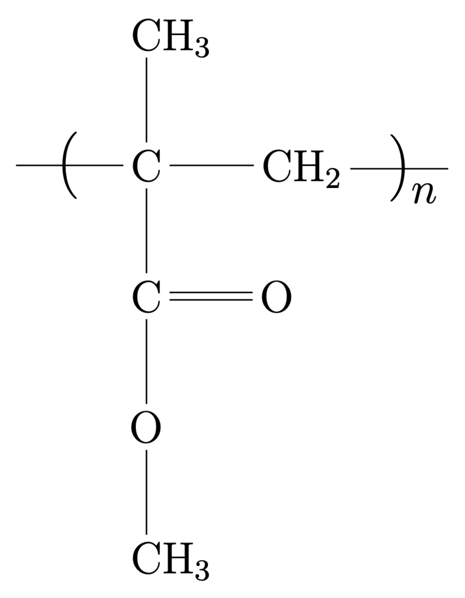
The quantity $M_w$ is therefore dependent on the typical length of these polymer chains; more precisely, it is defined as the weight-averaged molar mass of the PMMA molecules making up the resist. A local reduction in $M_w$ occurs in positive-tone resists such as PMMA when high-energy electron exposure induces polymer chain scission by breaking bonds between monomers (Dobisz et al. 2000). For the processing described in this paper, the 130 nm-thick resist film was attained by spin-coating PMMA with $M_w = 950$ kg mol$^{-1}$ diluted 3% in anisole (MicroChem Corp.) on a clean, dehydrated, polished silicon wafer 100 mm in diameter and 0.5 mm thick (Virginia Semiconductor, Inc.) at 3 krpm using a dynamic dispense followed by a solvent bake-out.Both the dehydration bake and the solvent bake were performed at $180^{\circ}$C for 3 minutes by hotplate. Lithographic electron-beam exposure, quantified as electron dose, $D$, was carried out using a Raith EBPG5200 systemhttps://www.raith.com/products/ebpg5200.html with a 100 kV accelerating voltage at the PSU Nanofabrication Laboratory.
In standard electron-beam lithography, resist is exposed with a fixed, sufficiently large dose $D$ and therefore $M_w$ is locally reduced to a high degree. With a 100 kV accelerating voltage, electrons are energetic enough to forward-scatter through the resist with negligible intensity loss over a 130 nm thickness and therefore $M_w$ can be considered to be uniform throughout the depth of the resist film. This causes exposed resist to be soluble for wet development so that it can be etched down to the substrate while unexposed resist remains virtually intact. In constrast to this process, which produces a bi-level topography in resist, GEBL relies on a lateral gradient of $M_w$ imparted in the resist to produce a multi-level topography following a timed wet development (Stauffer et al. 1992).
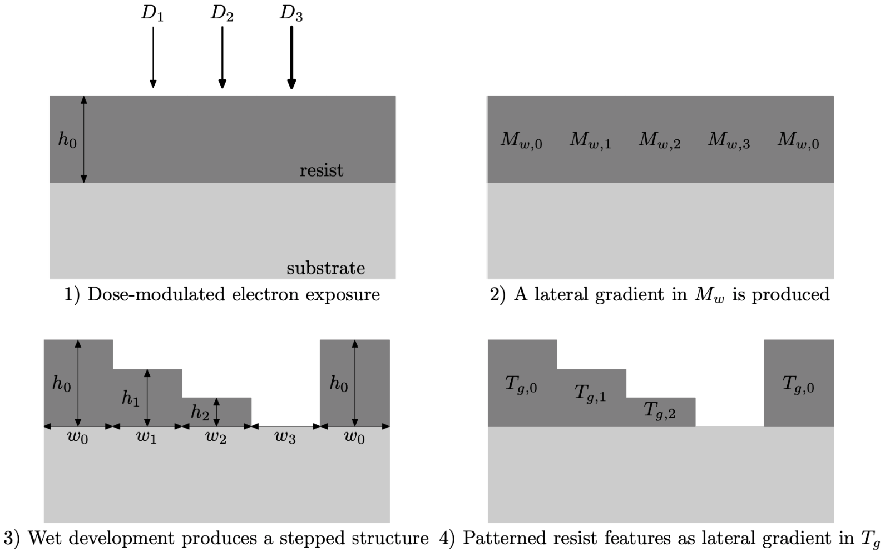
Illustrated in Figure 4, this is achieved using a dose-modulated electron exposure where doses $D_1 < D_2 < D_3$ give rise to local average molecular weights $M_{w,1} > M_{w,2} > M_{w,3}$, and if $D_3$ is large enough to clear the resist, local resist thicknesses $h_1 > h_2 > h_3 = 0$ following wet development. Unexposed portions of the resist (i.e., top steps of the staircase topography) in principle retain the original molecular weight of the polymer, $M_{w,0}$, and the coated resist thickness, $h_0$. While these portions of the resist may be inadvertently dosed by the proximity effect of electrons back-scattering through the substrate (Pavkovich 1986), the GEBL principles discussed here hold provided that there is sufficient contrast in $M_w$ following dose-modulated electron exposure and that an appropriate wet development recipe is adopted. Also dependent on $M_w$ is the polymer glass-liquid transition temperature, $T_g$, such that local average molecular weights $M_{w,0} > M_{w,1} > M_{w,2}$ correspond to $T_{g,0} > T_{g,1} > T_{g,2}$, where $T_{g,0}$ is the transition temperature of unexposed resist. Owing to the thermoplastic nature of the resist, the stepped structure produced by GEBL can be heated globally to a temperature $T_{\text{reflow}}$ such that electron-exposed resist is allowed to equilibrate in a molten state according to a time-dependent visco-elastic creep process while unexposed resist remains in its glass state (Schleunitz & Schift 2010; Kirchner et al. 2014). In this way, selective thermal reflow can be achieved through heating the substrate by hotplate to a temperature $T_{g,0} > T_{\text{reflow}} > T_{g,1}$ and a stepped topography can be equilibrated into a sloped, sawtooth-like topography to serve as a surface relief mold for a blazed grating through optimization of GEBL parameters, $T_{\text{reflow}}$ and heating time.
GEBL processing for fabrication of the grating prototype surface relief mold is outlined in Figure 4: the staircase topography features two electron-exposed steps, a cleared area and an unexposed step, all of equal width consistent with a periodicity of $d = 400$ nm (i.e., $w_0 = w_1 = w_2 = w_3 = 100$ nm). Electron dosing for GEBL was performed according to the resist contrast curve provided by McCoy et al. (2018), which is based on a room-temperature development recipe consisting of 2 minutes in a 1:1 mixture of methyl isobutyl ketone (MIBK) and isopropyl alcohol (IPA) followed by a 30-second rinse in IPA and a high-purity nitrogen blow-dry. This contrast curve is shown in Figure 5, where post-development PMMA thickness as measured by spectroscopic ellipsometry is plotted as a function of electron dose, $D$.
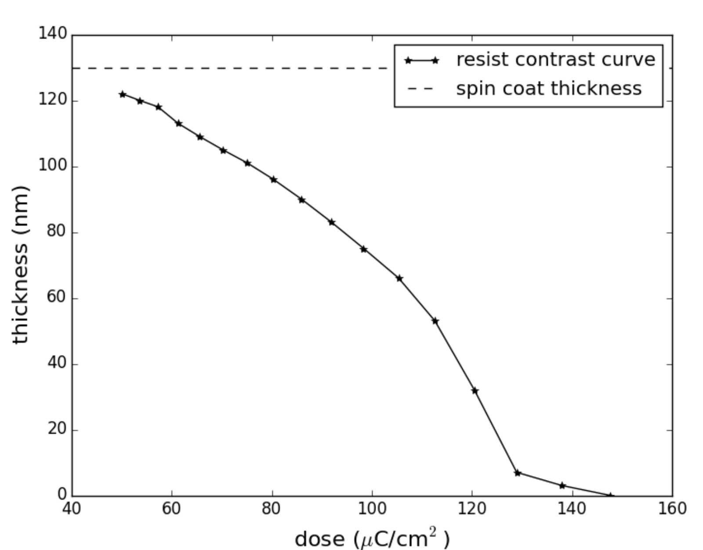
These data were processed using the three-dimensional proximity effect correction (3DPEC) algorithm included in the Layout Beamer software package developed by GenISys GmbHhttps://genisys-gmbh.com/beamer.html (Unal et al. 2010) to generate a dose-corrected layout appropriate for achieving exposed staircase steps with $h_1 \approx 0.66 h_0$ and $h_2 \approx 0.33 h_0$, where $h_0 \approx 130$ nm is the spin-coat thickness. Electron exposure for GEBL was carried out using an 8 nA beam current and a 400 $\micron$ aperture with a beam step size and a writing grid resolution of 10 nm, which is comparable to the beam spot size realized by the EBPG5200 under these conditions. These beam conditions differ from the recipe described in McCoy et al. (2018), which was limited by the 25 MHz EBPG5200 clock frequency at the time of publication.
Using the GEBL process outlined above, test patterns were exposed, developed and characterized by atomic force microscopy (AFM) to verify that the previously-reported staircase topography could be readily reproduced using the increased value for beam current enabled by a clock frequency upgrade to the EBPG5200.
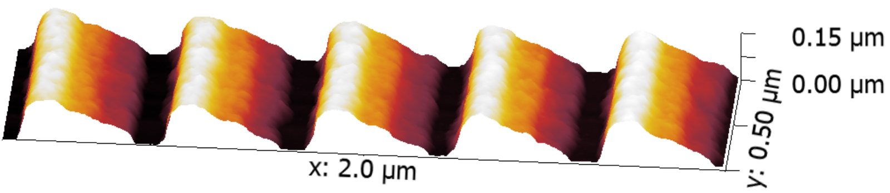
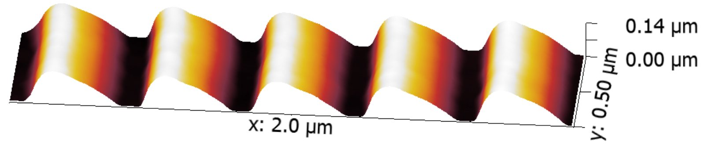
In an identical fashion to McCoy et al. (2018), all AFM was carried out at the PSU Materials Characterization Laboratoryhttps://www.mri.psu.edu/materials-characterization-lab with a Bruker Icon instrument equipped with a SCANASYST-AIR tip over 2 $\micron$ in the direction of grating periodicity at 512 samples per line to yield a 3.9 nm pixel size using 's PeakForce Tapping$^{\text{TM}}$ mode. A scan of the GEBL pattern exposed using an 8 nA beam current and a 400 $\micron$ aperture is shown in the top panel of Figure 6, where it is verified that the topography appears virtually indistinguishable from the previous result obtained using a 1 nA beam current and a 200 $\micron$ aperture. Next, thermal reflow experimentation on test samples was carried out using an automated hotplate tool on a resist stabilization system built by Fusion Semiconductor, where from the results reported by McCoy et al. (2018), it is expected that the optimum value for $T_{\text{reflow}}$ is near 120$^{\circ}$C. Through a series of reflow tests, it was found that $T_{\text{reflow}} = 116^{\circ}$C applied for a duration of 30 minutesDue to the 999-second time-out of the Fusion Semiconductor automated hotplate tool, thermal reflow was carried out in two consecutive 15-minute intervals. produced a topography that most closely resembled a sawtooth; an AFM of a test pattern treated this way is shown in the bottom panel of Figure 6. Based on these results, a 7.5 mm by 50 mm area was exposed for GEBL using a 300 $\micron$ by 300 $\micron$ mainfield with 10-nm resolution, a 4 $\micron$ by 4 $\micron$ subfield with 5-nm resolution and Large Rectangle Fine Trapezoid (LRFT) fracturing in Layout Beamer.
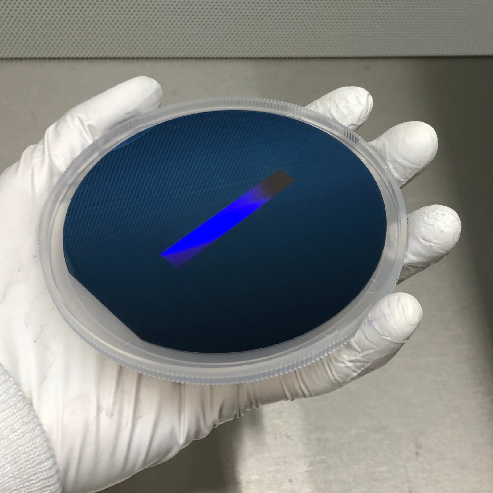
Under these conditions, the EBPG5200 exposure duration (including tool overhead) was $\lessapprox 20$ hours. The grating mold resulting from the entire TASTE process patterned on a 4-inch wafer is pictured in Figure 7.
2.3. Coating for Extreme Ultraviolet (EUV) and Soft X-ray (SXR) Reflectivity
While achieving an effective blaze response from the grating prototype hinges on the shape of the sawtooth facets produced by TASTE, absolute diffraction efficiency is also dependent on the reflectivity of the sawtooth facets at a nominal incidence angle $\zeta \approx 1.7^{\circ}$ as discussed in Section 2.1. Having an overcoating on the grating surface relief mold described in Section 2.2 is important not only for avoiding prominent absorption edges of carbon and oxygen in PMMA but also for preventing potential resist modification by the EUV/SXR beam during diffraction efficiency testing. Using data provided by the Center for X-ray Optics (CXRO) at Lawrence Berkeley National Laboratory,http://henke.lbl.gov/optical_constants/ the Fresnel reflectivity of gold at a grazing-incidence angle of $\zeta = 1.7^{\circ}$ is plotted in the left panel of Figure 8 as a function of photon energy ranging from 80 eV to 800 eV. With $\tilde{\nu}$ as the complex index of refraction of gold, Fresnel reflectivity for a wavefront with transverse electric polarization is given by
which is approximately equal to the corresponding Fresnel reflectivity for transverse magnetic polarization for grazing-incidence EUV/SXR radiation (Attwood & Sakdinawat 2017).
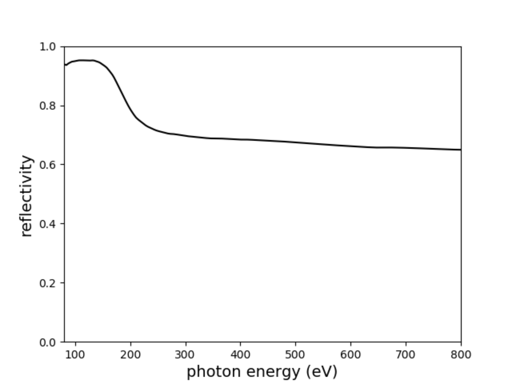
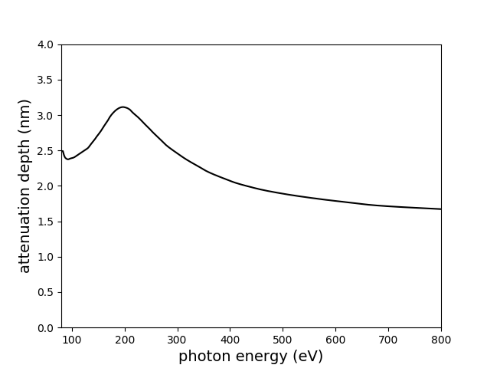
Due to this broadband response over the wavelength range for diffraction efficiency testing, 15.5 nm $> \lambda >$ 1.55 nm, gold was chosen as the reflective overcoat for the grating. To prevent further reflections at underlaying material interfaces from occurring, the thickness of the gold coating should be chosen appropriately. The distance normal to a surface at which radiation loses $1/\mathrm{e}$ of its original intensity is given by the attenuation depth (Gibaud & Vignaud 2009)
where $\tilde{k}_{\perp} = k_0 \sqrt{\tilde{\nu}^2 - \cos^2 \left( \zeta \right)}$ is the component normal to the surface of the wave vector in gold at a grazing-incidence angle $\zeta$ and $\text{Im} \! \left[ \tilde{k}_{\perp} \right]$ is the imaginary component of $\tilde{k}_{\perp}$. From this quantity, which is plotted in the right panel of Figure 8 as a function of photon energy using CXRO data, a 15 nm-thick layer deposited on the grating surface relief mold in principle is sufficient to prevent further reflections at underlaying material interfaces from occurring. However, because gold is non-reactive toward PMMA, a thin film of an oxidizing metal such as chromium or titanium must be first deposited on the patterned resist to promote wetting and adhesion for the top, reflective layer (Trolier-McKinstry & Newnham 2017). Ideally, the result is a gold coating that maintains the fidelity of the sawtooth topography while also realizing blazed groove facets with surface roughness, $\sigma$, low enough to reduce non-specular scatter at EUV and SXR wavelengths as much as possible. According to the Fraunhofer criterion for a smooth surface, given by (Beckmann & Spizzichino 1963)
$\sigma$ should be on the level of 1 nm RMS to satisfy this condition for 15.5 nm $> \lambda >$ 1.55 nm.
Deposition for the grating overcoating was performed by electron-beam physical vapor deposition (EBPVD) using a Kurt J.\ Lesker Lab-18 system at the PSU Nanofabrication Laboratory. First, a 5 nm-thick film of titanium was deposited on the patterned TASTE wafer as described in Section 2.2 at a previously-determined rate of 0.5 s$^{-1}$ under high vacuum. This allows titanium and some of the oxygen present in PMMA to form a thin oxide layer between the resist surface and the titanium coating, providing a wetted, metallic surface for the gold layer to adhere to. Without breaking vacuum, the gold was then deposited at a rate of 1.0 s$^{-1}$ to achieve a layer $\sim$15 nm thick.
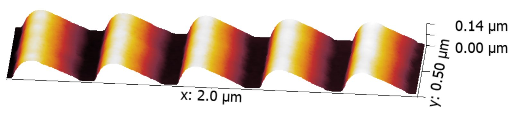
The final, coated grating prototype appears under AFM as a sawtooth topography very similar to the uncoated, TASTE-processed resist from Figure 6. This image of the coated grating grooves, taken using the same AFM methodology described in Section 2.2, is shown in Figure 9.
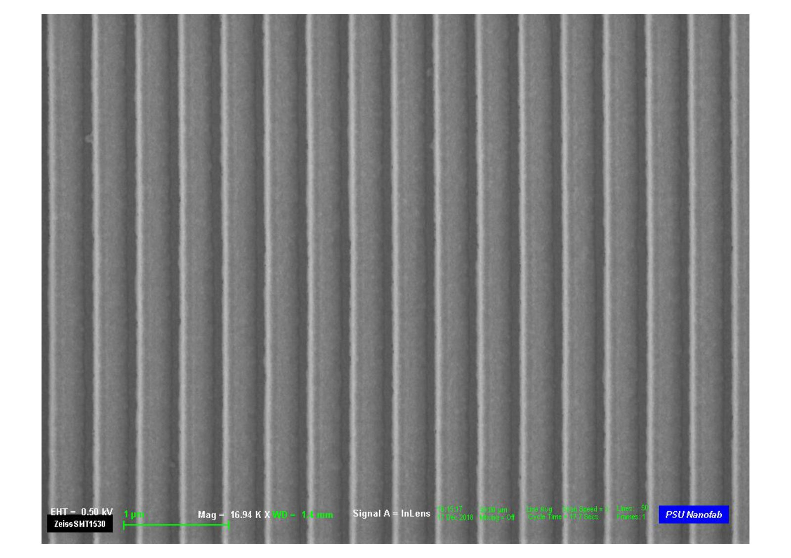
Moreover, these coated grooves were imaged over a larger area by field emission scanning electron microscopy using a Zeiss Leo 1530 system at the Nanofabrication Laboratory of the PSU Materials Research Institute. This micrograph, taken at a 0.5 kV electron accelerating voltage, is shown in Figure 10. From the gathered AFM data, $\sigma$ on the groove facets measures about 1.5 nm RMS using the NanoScope Analysis software package provided by whereas prior to the coating but after thermal reflow, $\sigma \approx 1.25$ nm RMS on PMMA. While the blaze angle measures $\delta \approx 27^{\circ}$ as expected, the groove depth measures about 10 nm less than the uncoated resist shown in Figure 6. Moreover, the bottom plateau of the coated grooves appears slightly widened relative to the bottom plateau of the bare, TASTE-processed resist, where the surface of the silicon substrate is exposed, suggesting that the EBPVD process produces a nonconformal coating on the grating grooves to a level dependent on the EBPVD chamber geometry.erratum However, because these regions are to a high degree shadowed to the incoming radiation in a near-Littrow configuration, this is not expected to have a large impact on diffraction efficiency.
3. Testing Results
Following the methodology outlined in Section 2.1 and detailed by Miles et al. (2018), the grating prototype was tested for EUV and SXR diffraction efficiency at beamline 6.3.2 of the ALS. Figure 11 shows the gold-coated grating prototype installed inside the beamline test chamber in an extreme off-plane mount, where the dispersion direction, $x$, is roughly parallel with the direction of horizontal stage motion for the photodiode detector, which is seen masked with a 0.5 mm-wide vertical slit.
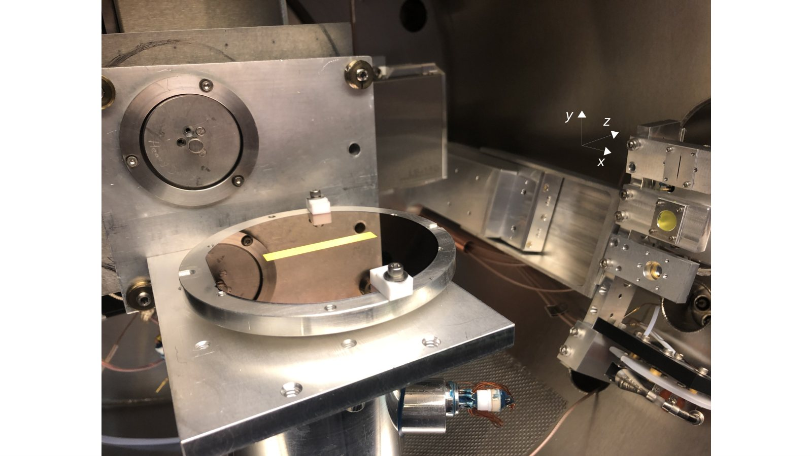
The grating was first oriented at a yaw angle of $\varphi \approx 0^{\circ}$ with graze and roll angles, $\eta$ and $\phi$ respectively, being approximately zero as measured by the tilt of the optic mount using a spirit level. The graze angle was then adjusted to the nominal test value of $1.5^{\circ}$ by using the goniometric stage motion of the photodiode to ensure that the angle between the direct beam and the reflected beam is roughly $2 \eta \approx 3^{\circ}$. Next, all grating geometric angles introduced in Section 2.1 were determined experimentally through analyzing the arc of diffraction as sampled by the photodiode. While the $x$-positions of propagating orders can be determined by sampling the diffracted arc along the horizontal direction of the detector staging, their positions along the cross-dispersion direction, $y$, require knowledge of the system throw, $L \approx 235$ mm, to map the goniometric angle associated with the stage motion, $\Theta$, to a $y$-coordinate using $y = L \sin \left( \Theta \right)$. Thus with a measured value for $L$, the diffracted arc can be fit to a circle to determine values for the arc radius, $r$, as well as the $x-y$ coordinates of the arc center. By comparing these to the positions of the direct beam and $0^{\text{th}}$ order as they fall on the diffracted arc, the orientation of the grating relative to the incident beam and the photodiode staging could be determined experimentally. From these measurements, the grating was set to a near Littrow configuration by adjusting $\varphi$ to ensure that $\alpha \approx 27^{\circ}$ and $\gamma \approx 1.7^{\circ}$ at a graze angle of $\eta \approx 1.5^{\circ}$.
The throw of the system at the location of $0^{\text{th}}$ order was measured to be $L = 233.0 \pm 1.4$ mm by comparing the known detector length of 10 mm to the angular size of the detector as measured by a goniometric scan of the beam. In principle, $L$ changes as the the detector moves along the direction $x$ with focal corrections on the order of tens of micrometers within 10 mm of travel. However, for the analysis and discussion that follows, these corrections are ignored so that order locations are mapped using $x$ and $y = L \sin \left( \Theta \right)$ with $L$ fixed at the measured value. In the final test geometry, the diffracted arc was mapped using data gathered at 450 eV and 500 eV in steps of 50 $\micron$ along the $x$-direction of the photodiode staging.
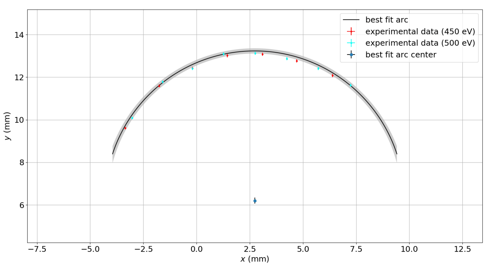
By fitting these data to a half-circle as shown in Figure 12, the arc radius was measured as $r = 7.03 \pm 0.12$ mm and from $r = L \sin \left( \gamma \right)$ by Equation 3, the cone opening half-angle for the diffraction pattern was determined to be $\gamma = 1.73 \pm 0.03^{\circ}$. Next, the azimuthal incidence angle, $\alpha$, was measured independently of the roll angle using
where $\Delta x_{\text{dir}}$ is the $x$-distance between the direct beam (not shown in Figure 12) and the center of the diffracted arc determined from the fit. With a measured value of $\alpha = 23.4 \pm 0.6^{\circ}$, the roll angle was constrained as $\phi = 1.14 \pm 0.04^{\circ}$ using
This equation is as corrected by the 2022 erratum. The manuscript and the published article give the small-angle form, $\sin(\phi) = \Delta x_0 / r - \sin(\alpha)$.
where $\Delta x_0$ is the $x$-distance between $0^{\text{th}}$ order and the center of the diffracted arc. Using this result and $\Delta y_0$, the $y$-distance between $0^{\text{th}}$ order and the center of the diffracted arc, a graze angle of $\eta \approx 1.5^{\circ}$ was verified through
to give $\eta = 1.56 \pm 0.04^{\circ}$.
| ll@ parameter | measured value |
|---|---|
| system throw ($L$) | $232.0 \pm 1.4$ mm |
| arc radius ($r$) | $7.03 \pm 0.12$ mm |
| $x$-distance between direct beam and arc center ($\Delta x_{\text{dir}}$) | $2.80 \pm 0.05$ mm |
| $x$-distance between 0$^{\text{th}}$ order and arc center ($\Delta x_0$) | $2.92 \pm 0.05$ mm |
| $y$-distance between 0$^{\text{th}}$ order and arc center ($\Delta y_0$) | $6.33 \pm 0.14$ mm |
| cone opening half-angle ($\gamma$) by Equation 3 | $1.73 \pm 0.03^{\circ}$ |
| azimuthal incidence angle ($\alpha$) by Equation 13 | $23.4 \pm 0.6^{\circ}$ |
| roll (rotation about $z$-axis; $\phi$) by Equation 14 | $1.14 \pm 0.04^{\circ}$ |
| graze (rotation about $x$-axis; $\eta$) by Equation 15 | $1.56 \pm 0.04^{\circ}$ |
| yaw (rotation about $y$-axis; $\varphi$) by Equation 16 | $0.69 \pm 0.01^{\circ}$ |
Finally, grating yaw was measured using
to yield $\varphi = 0.69 \pm 0.01^{\circ}$. Summarized in Table 1, these measurements indicate a near-Littrow test configuration at $\eta \approx 1.5^{\circ}$ for a blaze angle of $\delta \approx 27^{\circ}$.
In the test geometry discussed above, diffraction efficiency data were gathered as a function of photon energy where for each measurement, both the diffracted arc and the direct beam were scanned along the $x$-direction in 50 $\micron$ increments. From these measurements, absolute diffraction efficiency (i.e., $\mathcal{E}_n = \mathcal{I}_n / \mathcal{I}_{\text{inc}}$ given by Equation 1) was calculated by identifying the maximum of each diffracted order and the direct beam, taking three intensity measurements around the centroid and then dividing each order by the direct beam after subtracting out the appropriate noise floors. Contributions to this noise include dark current from the photodiode detector, which was measured using the photodiode readout in the absence of the EUV/SXR beam, and additionally, diffuse scatter arising from surface roughness on the groove facets. The latter, which in principle only affects $\mathcal{I}_n$, was estimated using the continuum level in between order maxima and was found to be significant only for photon energies starting at 600 eV where it contributed to $\mathcal{E}_n$ on the level of a percent or less for each propagating order. These diffraction efficiency measurements were performed in 20 eV steps, first from 440 to 800 eV and then from 80 to 420 eV. For the latter set of measurements, the triple-mirror order sorter at the beamline is required to maintain a spectrally pure beam provided by the monochromator (Gullikson et al. 2001).
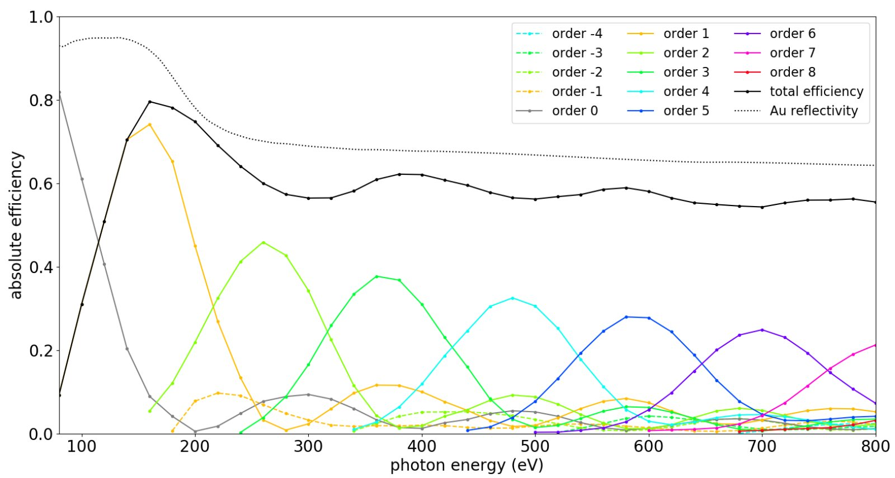
Although the implementation of the order sorter is expected to shift slightly the position of the beam on the grating, and hence the measured parameters listed in Table 1, the effect is small and not apparent in the measured absolute efficiency data, which are shown in Figure 13 compared to the Fresnel reflectivity of gold, $\mathcal{R}_{F}$, at $\zeta = 1.73^{\circ} \approx \gamma$ using Equation 10. However, as indicated most clearly by the sharp cut-off in the measured $n=2$ curve at 160 eV, the beam shift evidently caused measurements of propagating orders of $n=2$ and $n=3$ with large diffracted angle, $\beta$, to be missed by the photodiode during data collection. These data nonetheless show that peak order efficiency ranges from about 75% down to 25% as photon energy, and order number, increase. The total diffraction efficiency, defined as $\mathcal{E}_{\text{tot}} \equiv \sum_n \mathcal{E}_n$ for all propagating orders with $n \neq 0$, is also plotted in Figure 13 but due to the missing $n=2$ and $n=3$ measurements in the EUV, this curve underestimates the true total diffraction efficiency for photon energies smaller than 240 eV. Moreover, relative efficiency was calculated by dividing each $\mathcal{E}_n$ measurement from Figure 13 by $\mathcal{R}_{F}$.
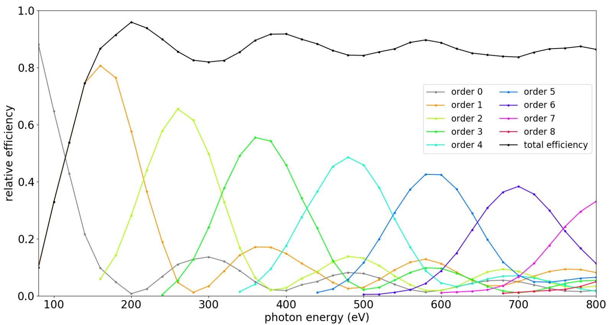
This result is plotted in Figure 14 where total relative diffraction efficiency, $\mathcal{E}_{\text{tot}} / \mathcal{R}_{F}$, ranges from about 95% to 88% as photon energy increases from 240 eV to 800 eV, where all propagating orders are accounted for.
4. Discussion
The beamline measurements presented in Section 3 indicate that the grating prototype yields an approximate blaze response at EUV and SXR wavelengths in a near-Littrow configuration. This is evidenced by the total diffraction efficiency shown in FiguresFigure 13 andFigure 14 being dominated by single orders with positive $n$ and peak positions close to those predicted by Equation 9 for the blaze wavelength. However, along with the peak orders that resemble a blaze response, propagating orders of lower $n$ each contribute to the total absolute efficiency at a level of about 10%. Thus toward the blue end of the measured bandpass where a relatively large number of propagating orders exist by Equation 2, peak-order diffraction efficiency is comparatively low and comprises a smaller fraction of $\mathcal{E}_{\text{tot}}$. This suggests that diffracted orders gradually become suppressed with increasing $n$ due to an imperfect sawtooth topography generated by the TASTE process outlined in Section 2.2. That is, while an idealistic blazed grating exhibits a sharp sawtooth topography, the grating prototype features a quasi-flat apex produced by the 100 nm-wide, top staircase step in the GEBL pattern that is nominally unexposed to high-energy electrons and hence largely unaffected by the thermal reflow process.
In addition to an imperfect sawtooth topography, peak-order diffraction efficiency, especially toward the blue end of the spectrum, is impacted by $\lambda$-dependent losses that arise from surface roughness on the groove facets. This is gleaned from analyzing the total relative response from the grating, defined as $\left( \mathcal{E}_{\text{tot}} + \mathcal{E}_0 \right) / \mathcal{R}_{F}$, where $\mathcal{R}_{F}$ is the Fresnel reflectivity of gold at the angle $\zeta$ introduced in Section 2.1. Due to the short, nano-scale attenuation depth of gold at grazing incidence as discussed in Section 2.3, it is justified to treat the grating overcoat material as an infinitely-thick layer of gold using EUV and SXR optical constants provided by CXRO. The grating's total relative response is plotted in Figure 15 over the range of measured photon energies that include all propagating orders, where the data show a monotonic decrease from about 96% down to 88% as wavelength decreases, suggesting that $\lambda$-dependent losses are occurring. This is to be compared with the specular reflectivity of a hypothetical mirror flat relative to $\mathcal{R}_{F}$ such that its total relative response is 100% in the absence of surface roughness. In the regime of total external reflection, the reduced specular reflectivity from a rough surface, $\mathcal{R}_{\text{rough}}$, is described approximately by the Nevot-Croce factor (Nevot & Croce 1980; de Boer 1995; Gibaud & Vignaud 2009). For a thick slab of gold with complex index of refraction $\tilde{\nu}$ and RMS surface roughness $\sigma$, this factor is given by
where, as described in Section 2.3, $k_{\perp} = k_0 \sin \left( \zeta \right)$ and $\tilde{k}_{\perp} = k_0 \sqrt{\tilde{\nu}^2 - \cos^2 \left( \zeta \right)}$ are the components of the wave vector normal to the surface in vacuum and gold, respectively, with $k_0 \equiv 2 \pi / \lambda$. Moreover, $\text{Re} \! \left[ \sqrt{\tilde{\nu}^2 - \cos^2 \left( \zeta \right)} \right]$ represents the real part of $\tilde{k}_{\perp} / k_0$.
As described by de Boer (1995), the Nevot-Croce factor defined by Equation 17 is valid for small roughness features taking on a Gaussian height distribution with $k_{\perp} \sigma \ll 1$ so that using $\sigma \approx 1.5$ nm RMS as measured by AFM and $\zeta = 1.73^{\circ}$, this condition is satisfied for
Additionally, derivations of the Nevot-Croce factor assume a surface correlation length, $\xi$, satisfying $\xi k^2_{\perp} \ll k_0$. Keeping $\xi$, which represents the lateral size scale of roughness features, as an unknown, this yields
If equationsEquation 18 andEquation 19 are fulfilled, diffuse scatter in vacuum can in principle be neglected and $\lambda$-dependent losses attributed to absorption as radiation scatters into the medium. Otherwise, radiation of wavelength $\lambda$ is able to diffract from roughness spatial frequencies on the order of $\xi^{-1}$, producing diffuse scatter that can be detected by the photodiode, in which case details of the roughness power spectrum are required to obtain a more accurate expression for $\mathcal{R}_{\text{rough}}$ (de Boer 1995; Wen et al. 2015). Because this information is not known for the groove facets on the grating prototype, Equation 17 was taken to approximate the total relative response from the grating prototype in the presence of surface roughness. This is plotted in Figure 15, where it is seen that the data closely match the Nevot-Croce factor with the experimentally-determined values of $\zeta \approx \gamma = 1.73^{\circ}$ and $\sigma \approx 1.5$ nm RMS.
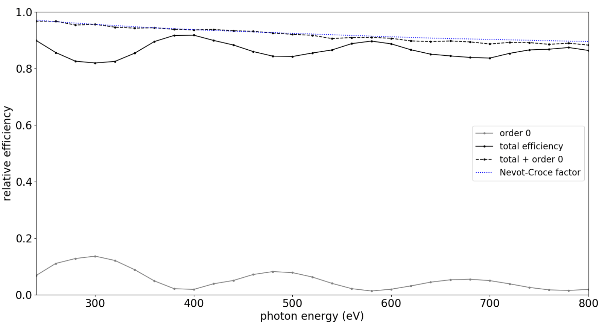
This supports the idea that surface roughness on the groove facets is responsible for the losses in the grating's total response over the measured bandpass that encompasses all propagating orders. Although the detection of diffuse scatter for photon energies 600 eV and higher as described in Section 3 suggests that the conditions for the Nevot-Croce factor to be valid are not strictly fulfilled at these relatively short wavelengths, Figure 15 indicates that Equation 17 is a decent approximation across the bandpass considered. However, future diffraction efficiency test campaigns should better quantify diffuse scatter due to surface roughness in a similar manner to x-ray reflectivity experiments that aim to characterize surfaces, materials and interfacial roughness (Gay & Lapena 1999; Baumbach & Mikulik 1999).
To investigate the impact that an imperfect sawtooth topography with an unpointed apex has on the measured diffraction efficiency, absolute diffraction efficiency was modeled according to vector diffraction theory. This was handled using the software package PCGrate-SX version 6.1,https://www.pcgrate.com/loadpurc/download which solves the Helmholtz equation through the integral method for a custom grating boundary and incidence angles input by the user (Goray & Schmidt 2010). Based on the findings of Marlowe et al. (2016), which verify a lack of polarization sensitivity for SXR gratings used in extreme off-plane mounts, PCGrate-SX calculations were carried out assuming a perfectly conducting grating boundary with perfectly smooth groove facets and an incident wavefront with transverse electric polarization. While perfect conductivity combined with the absence of surface roughness implies a lossless response from the grating grooves, PCGrate-SX modulates the predicted diffraction efficiency by the reflectivity of a user-input, stratified medium defined by optical constants and custom layer thicknesses. Taking the grating material to be an infinitely-thick layer of gold as discussed above, the edge-on groove shape of the grating prototype was approximated as an acute trapezoid with a near-vertical lateral side opposite a slope that emulates the active blaze facet. Additionally, a flat bottom portion was included to represent the cleared portion of the resist described in Section 2.2.
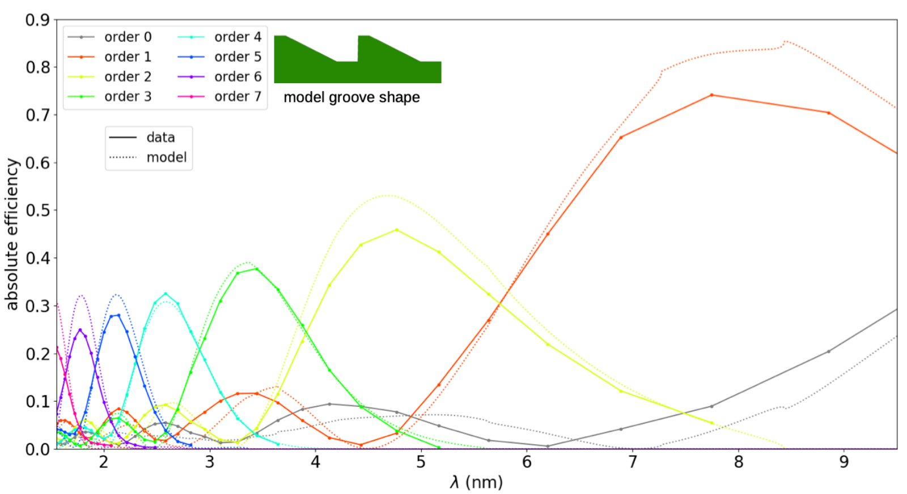
Using the nominal values of $\alpha$ and $\gamma$ listed in Table 1 for grating incidence angles and $d=400$ nm for the groove spacing, a series of PCGrate-SX calculations were performed for a range of trapezoids with slightly-varying dimensions close to those measured by AFM in Figure 9. The model matching the measured data most closely was one with a blaze angle of $\delta = 27^{\circ}$, a groove depth of 120 nm, a flat-top width of 77 nm and bottom-width of 85 nm. These predicted data, modulated by the Nevot-Croce factor from Figure 15, are plotted as a function of $\lambda$ in Figure 16 and compared to the measured diffraction efficiency, $\mathcal{E}_n$, for orders $n=0$ through $n=7$.
Figure 16 shows that the measured peak order positions match roughly those predicted by the model, demonstrating that the grating prototype has an efficiency response similar to that of a blazed grating with $d=400$ nm and $\delta = 27^{\circ}$ at the experimentally-determined incidence angles of $\alpha = 23.4^{\circ}$ and $\gamma = 1.73^{\circ}$. However, the amplitudes of the peak orders generally fall short of the model with the apparent exceptions of $n=3$ and $n=4$. This phenomenon seems to be due in part to the mismatches that exist between the measured data and the model for secondary diffraction peaks, suggesting that the groove shape trapezoidal approximation is not sufficient to reproduce these results to a high degree of accuracy. The grating prototype grooves likely have an apex that is slightly rounded as a result of the thermal reflow process but this is difficult to verify through AFM because the shape of the SCANASYST-AIR tip is convolved with the true grating topography in the micrographs shown in FiguresFigure 6 andFigure 9. Nonetheless, rounding of corners or other deviations from an ideal acute trapezoid are expected to have an impact on the distribution of diffraction efficiency among orders. Figure 16 also shows that measured peak order efficiency becomes increasingly diminished relative to the model as order number increases beyond $n=4$, which is consistent with the observation already mentioned that the relatively large number of orders at short $\lambda$ each contribute substantially to the total efficiency, $\mathcal{E}_{\text{tot}}$, while the peak order comprises a relatively smaller fraction. This is another indication of there being groove shape imperfections that diminish the grating prototype's blaze response. A possible explanation beyond rounded corners at the apex is irregularity or non-flatness of the sloped surfaces of the grating grooves across the prototype. In principle this could be caused in part by a non-uniform spin coat thickness but it is expected that the imperfect blazed grating topography produced by TASTE process described in Section 2.2 is the largest contributor to this issue.
5. Summary and Conclusions
A prototype for a reflection grating with a groove spacing of 400 nm was fabricated at the PSU Materials Research Institute by generating an approximate sawtooth topography in 130 nm-thick PMMA resist coated on a silicon wafer through the process of TASTE and then coating the grating grooves with a thin layer of gold via EBPVD for EUV and SXR reflectivity. Diffraction efficiency measurements spanning 15.5 nm $> \lambda >$ 1.55 nm in a grazing incidence, extreme off-plane mount collected at beamline 6.3.2 of the ALS demonstrate that the grating behaves approximately as a blazed grating with groove cross-sections shaped like an acute trapezoid and a blaze angle of $\delta \approx 27^{\circ}$. The total response from the grating relative to the reflectivity of the gold overcoat measures between 96% and 88% in the SXR, with losses attributed to absorption and diffuse scatter from grating facets with 1.5 nm RMS surface roughness. However, even with losses accounted for, the blaze response is observed to diminish for peak orders with $n=5$ and greater. While this phenomenon is a result of the TASTE process yielding an imperfect sawtooth topography, these results show that TASTE is a promising fabrication technique for the manufacture of custom reflection gratings for EUV and SXR spectroscopy.
An especially important feature of the TASTE process is its ability to define a sawtooth-like topography over a layout defined by electron-beam lithography while also avoiding the dependences on crystallographic structure that exist in processes that use anisotropic wet etching to provide a grating blaze (Franke et al. 1997; Chang 2003; McEntaffer et al. 2013; Miles et al. 2018). This is particularly advantageous for realizing fanned, curved or other variable-line-space groove layouts that are required for achieving high spectral resolving power, $\lambda / \Delta \lambda$, while also having blazed groove facets that enable high spectral sensitivity. With total absolute diffraction efficiency exceeding 40% in the SXR bandpass, these results show that gratings fabricated by TASTE are capable of meeting Lynx requirements in terms of spectral sensitivity. Additionally, an absolute efficiency of 75% in first order at 160 eV gives an indication that TASTE can realize a highly-efficient grating for EUV spectroscopy with modification of grating parameters. However, further work in nanofabrication and spectral resolving power testing is required to determine to what degree TASTE is able to make improvements in these areas of technological development. In particular, producing gratings with groove spacing significantly smaller than 400 nm that maintain a satisfactory sawtooth topography is challenging from the standpoint of fabrication by TASTE. This last item is crucial for SXR reflection gratings that often call for groove spacings near 160 nm and is the subject of a forthcoming publication (McCurdy et al. 2019).
// acknowledgments //
This research was supported by NASA Space Technology Research Fellowship under grant no.\ NNX16AP92H and used resources of the Nanofabrication Laboratory and the Materials Characterization Laboratory at the Penn State Materials Research Institute in addition to the Advanced Light Source, which is a DOE Office of Science User Facility under contract no.\ DE-AC02-05CH11231. Special thanks to Chad Eichfeld and Michael Labella at the Penn State Materials Research Institute and Eric Gullikson at the Advanced Light Source.
// references //
- Attwood, D., & Sakdinawat, A. 2017, X-Rays and Extreme Ultraviolet Radiation: Principles and Applications, 2nd edn. (Cambridge University Press) doi:10.1017/CBO9781107477629
- Baumbach, T., & Mikulik, P. 1999, in X-ray and Neutron Reflectivity: Principles and Applications (Springer), 232–280
- Beckmann, P., & Spizzichino, A. 1963, The scattering of electromagnetic waves from rough surfaces, International series of monographs on electromagnetic waves (Pergamon Press; [distributed in the Western Hemisphere by Macmillan, New York])
- Cash, Jr., W. C. 1991, Applied Optics, 30, 1749 doi:10.1364/AO.30.001749
- Chang, C.-H. 2003, Journal of Vacuum Science Technology B: Microelectronics and Nanometer Structures, 21, 2755 doi:10.1116/1.1627814
- de Boer, D. K. G. 1995, Phys. Rev. B, 51, 5297 doi:10.1103/PhysRevB.51.5297
- den Herder, J. W., Brinkman, A. C., Kahn, S. M., et al. 2001, Astronomy & Astrophysics, 365, L7 doi:10.1051/0004-6361:20000058
- Dobisz, E. A., Brandow, S. L., Bass, R., & Mitterender, J. 2000, Journal of Vacuum Science Technology B: Microelectronics and Nanometer Structures, 18, 107 doi:10.1116/1.591242
- France, K., Fleming, B. T., Drake, J. J., et al. 2019, in UV, X-Ray, and Gamma-Ray Space Instrumentation for Astronomy XXI, ed. O. H. Siegmund, Vol. 11118, International Society for Optics and Photonics (SPIE), 38 – 51 doi:10.1117/12.2526859
- Franke, A. E., Schattenburg, M. L., Gullikson, E. M., et al. 1997, Journal of Vacuum Science Technology B: Microelectronics and Nanometer Structures, 15, 2940 doi:10.1116/1.589759
- Gaskin, J. A., Swartz, D. A., Vikhlinin, A., et al. 2019, Journal of Astronomical Telescopes, Instruments, and Systems, 5, 021001 doi:10.1117/1.JATIS.5.2.021001
- Gay, J.-M., & Lapena, L. 1999, Experiments on Solid Surfaces (Berlin, Heidelberg: Springer Berlin Heidelberg), 217–231 doi:10.1007/3-540-48696-8_7
- Gibaud, A., & Vignaud, G. 2009, Specular Reflectivity from Smooth and Rough Surfaces, ed. J. Daillant & A. Gibaud (Berlin, Heidelberg: Springer Berlin Heidelberg), 85–131 doi:10.1007/978-3-540-88588-7_3
- Goray, L. I., & Schmidt, G. 2010, J. Opt. Soc. Am. A, 27, 585 doi:10.1364/JOSAA.27.000585
- Gullikson, E. M., Mrowka, S., & Kaufmann, B. B. 2001, Recent developments in EUV reflectometry at the Advanced Light Source doi:10.1117/12.436712
- Kirchner, R., Schleunitz, A., & Schift, H. 2014, Journal of Micromechanics and Microengineering, 24, 055010 doi:10.1088/0960-1317/24/5/055010
- Kirchner, R., Guzenko, V., Vartiainen, I., Chidambaram, N., & Schift, H. 2016, Microelectronic Engineering, 153, 71 doi:http://dx.doi.org/10.1016/j.mee.2016.01.017
- Loewen, E. G., & Popov, E. 1997, Diffraction gratings and applications
- Marlowe, H., McEntaffer, R. L., Tutt, J. H., et al. 2016, Applied Optics, 55, 5548 doi:10.1364/AO.55.005548
- McCoy, J., McEntaffer, R., & Eichfeld, C. 2018, Journal of Vacuum Science and Technology B:Nanotechnology and Microelectronics, 36 doi:10.1116/1.5048197
- McCurdy, R. C., McEntaffer, R. L., McCoy, J. A., & Miles, D. M. 2019, in Optics for EUV, X-Ray, and Gamma-Ray Astronomy IX, ed. S. L. O'Dell & G. Pareschi, Vol. 11119, International Society for Optics and Photonics (SPIE), 257 – 265 doi:10.1117/12.2530052
- McEntaffer, R. 2019, Journal of Astronomical Telescopes, Instruments, and Systems, 5 doi:10.1117/1.JATIS.5.2.021002
- McEntaffer, R., DeRoo, C., Schultz, T., et al. 2013, Experimental Astronomy, 36, 389 doi:10.1007/s10686-013-9338-1
- Miles, D. M., McCoy, J. A., McEntaffer, R. L., et al. 2018, The Astrophysical Journal, 869, 95 doi:10.3847/1538-4357/aaec73
- Neviere, M., Maystre, D., & Hunter, W. R. 1978, Journal of the Optical Society of America (1917-1983), 68, 1106
- Nevot, L., & Croce, P. 1980, Revue de Physique appliqu\'ee, 15, 761
- Pavkovich, J. M. 1986, Journal of Vacuum Science Technology B: Microelectronics and Nanometer Structures, 4, 159 doi:10.1116/1.583369
- Pfirrmann, S., Kirchner, R., Lohse, O., et al. 2016, in Proceedings of the SPIE, Vol. 9779, Advances in Patterning Materials and Processes XXXIII, 977925 doi:10.1117/12.2219165
- Schleunitz, A., & Schift, H. 2010, Journal of Micromechanics and Microengineering, 20, 095002 doi:10.1088/0960-1317/20/9/095002
- Schleunitz, A., Guzenko, V. A., Messerschmidt, M., et al. 2014, Nano Convergence, 1, 7 doi:10.1186/s40580-014-0007-5
- Stauffer, J. M., Oppliger, Y., Regnault, P., Baraldi, L., & Gale, M. T. 1992, Journal of Vacuum Science Technology B: Microelectronics and Nanometer Structures, 10, 2526 doi:10.1116/1.586051
- Trolier-McKinstry, S., & Newnham, R. E. 2017, Materials Engineering: Bonding, Structure, and Structure-Property Relationships (Cambridge University Press) doi:10.1017/9781316217818
- Unal, N., Mahalu, D., Raslin, O., et al. 2010, Microelectronic Engineering, 87, 940 doi:https://doi.org/10.1016/j.mee.2009.12.002
- Underwood, J. H., Gullikson, E. M., Koike, M., et al. 1996, Review of Scientific Instruments, 67, 3372 doi:10.1063/1.1147338
- Voronov, D. L., Anderson, E. H., Cambie, R., et al. 2011, Optics Express, 19, 6320 doi:10.1364/OE.19.006320
- Wen, M., Kozhevnikov, I. V., & Wang, Z. 2015, Opt. Express, 23, 24220 doi:10.1364/OE.23.024220